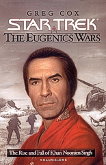

|


Literatura

| ''STAR
TREK: EUGENIC WARS" |  |
| Volume 1
|
| Review
por Leandro M. Pinto |
| Uma das caractersticas do rico Cnone & Cronologia de Jornada nas Estrelas ter diversas informaes sobre eventos que teriam ocorrido antes da poca em que se passa A Srie Original. O perodo da misso de cinco anos original da Enterprise, portanto, meio vista como um "ano zero" da cronologia da franquia, e um dos eventos mais populares, por assim dizer, desta cronologia sem dvida as chamadas Guerras Eugnicas. Primeiro mencionadas no episdio Space Seed, da Srie Original, aprendemos que elas foram um conflito que teria ocorrido no final do sculo 20, e no qual a participao de humanos geneticamente modificados no apenas ocorreu, como tambm teria sido o catalisador do conflito. No mesmo episdio, James Kirk e sua tripulao conhecem diversos destes super-humanos, incluindo o seu lder Khan Noonien Singh. Tempos depois, em Jornada nas Estrelas II: A Ira de Khan, o tema foi novamente revisitado, e outro embate entre Kirk e Khan ocorreu em um dos filmes mais populares da franquia. Apesar de todo este background do episdio original e do segundo filme para o cinema, alm de inmeras outras pequenas menes em outros episdios, o fandom nunca teve realmente uma viso geral e completa sobre o que teria de fato ocorrido durante as Guerras Eugnicas, e como estas teriam afetado o planeta Terra do universo onde a franquia existe. com a inteno de preencher esta lacuna que temos agora a srie de livros Star Trek: The Eugenics Wars, de autoria de Greg Cox. Um ponto particularmente interessante sobre a obra considerar o seu contexto em comparao com o contexto histrico real. Quando Space Seed foi originalmente escrito por Carey Wilber e Gene Coon, os anos 1990 pareciam um longnquo futuro sobre o qual se poderia dar um ar de mistrio. Claro, quase quarenta anos depois do episdio, este eventual futuro j est no nosso passado, e desta forma, Greg Cox procurou equilibrar os elementos cnones conhecidos sobre as Guerras Eugnicas com os elementos histricos reais ocorridos entre o final dos anos 60 e o final dos anos 90. Mas falaremos mais a respeito disto na anlise; por ora, vamos j para a condensao da trama de The Eugenics Wars, Volume 1. O
Incio no Futuro: James Kirk e a Enterprise como fios da meada da trama A trama comea com a Enterprise em rota de Sycorax, onde Kirk e seu oficiais iro conhecer os representantes oficiais de uma colnia chamada Paragon, para uma srie de conversaes diplomticas. H duas questes interessantes a serem levadas em conta nesta presente misso da Enterprise: primeiro, Paragon uma ex-colnia terrquea/humana, criada nos primrdios da explorao espacial humana, mas que com o tempo deixou de manter contato com seu planeta-natal. E segundo, os humanos de Paragon abraaram a eugenia e o desenvolvimento gentico, em direto contraponto ao que ocorreu na Terra e na Federao como um todo. Estes humanos que eles esto para encontrar so geneticamente modificados e o Conselho da Federao sabe disto, como Kirk explica para Spock e McCoy. A questo sugere, portanto, que o Conselho da Federao est cogitando dar status de membro a um planeta que tem poltica de eugenia, e ento isto significaria uma reviso na poltica federada sobre a questo. O debate que se segue o ponto principal deste prefcio Kirk no quer fazer julgamentos de valor ainda, enquanto McCoy apaixonadamente se ope a idia, com Spock o flanqueando para que o bom doutor no seja precipitado em tirar concluses sobre uma situao a qual eles precisam de mais dados para fazer uma anlise. Aps o debate, Kirk mostra interesse em obter mais informaes sobre as Guerras Eugnicas, para ter um contexto histrico mais amplo sobre a questo que esto indo debater em Paragon. Spock sugere uma pesquisa sobre o tema, e esta aqui a deixa, portanto, para tanto eles como ns, enquanto leitores, seguirmos para a narrativa de Greg Cox sobre os primrdios das Guerras Eugnicas, o que ocorre no captulo a seguir. Alguns pontos cruciais a considerarmos aqui so os seguintes: McCoy mencionou a Kirk que eles encontraram Khan pessoalmente por volta do ano anterior, o que indica claramente que a ao no sculo 23 se d durante a era da Srie Original. Alm disto, Spock tambm menciona um dos personagens-chave da trama... Gary Seven. Isto indica tambm que as aes de Seven durante as Guerras Eugnicas so de conhecimento histrico dos federados do sculo 23... a importncia deste detalhe ser mais bem entendida ao que acompanharmos a trama. Ainda
mais tarefas na Terra A ao inicial de The Eugenics Wars nos leva a Berlim Oriental no incio de 1974, onde encontramos a primeira ao de trs dos principais personagens da trama, e que tambm so rostos j conhecidos do fandom: Gary Seven, Roberta Lincon e Isis. Aqueles familiarizados com o episdio Assignment: Earth, da segunda temporada da Srie Original j conhecem as capacidades e caractersticas deste trio, mas para os colegas que eventualmente no viram este episdio, uma recapitulada est na ordem do dia: Gary Seven originrio de um planeta onde uma colnia de descendentes humanos que h sculos foram levados para l, desenvolveram uma avanada sociedade. Mesmo para a Federao no sculo 23, a existncia deste planeta largamente um mistrio, e Seven um operativo desta sociedade que est infiltrado no passado do planeta-natal de seus ancestrais meio que para supervisionar o desenvolvimento social da humanidade, e se assegurar que esta no se destrua por cometer alguma ao tola. Em Assignment: Earth, Kirk e seus tripulantes encontram Seven em uma de suas misses, alm de tambm conhecerem Roberta Lincon, uma loira meio sonsinha que Seven utilizava como secretria pessoal, mas que acaba aprendendo na ocasio a real natureza das aes de seu patro, e Isis, uma aliengena que entre vrias habilidades, pode posar como uma gata domstica comum. E aqui em Eugenics Wars que encontramos novamente estes alumnis da Srie Original. Roberta est no momento aguardando que Seven retorne de uma insurtida para adquirir informaes sobre a possibilidade de mais uma misso. Aps ter que se livrar de um indesejado berlinense dorme-sujo que imaginou ela ser uma presa fcil na noite da cidade, Roberta e Gary tem que correrem de guardas da Alemanha Oriental, pois estes acabaram notando as aes suspeitas deles. Aps uma fuga para uma rea segura, Gary utiliza o seu "servo", um dispositivo futurista de mil e uma utilidades (que juntamente com o computador Beta Cinco, de Gary, tambm foi visto em Assignment: Earth) e se teleportam para a base de operaes de Gary em Nova Iorque. Aps uma breve confabulada com Roberta, Gary chega a concluso de que o desaparecimento de diversos cientistas da rea de engenharia gentica algo que tem sido mais do que coincidncia, e decide por investigar mais a fundo algumas pistas que conseguiu em Berlim. O
Bero dos Super-Homens de Khan Entrementes, a narrativa nos apresenta para a Dra. Sarina Kaur, uma cientista indiana com formao em biologia e engenharia gentica, com ela trabalhando em alguns aspectos de um determinado projeto de engenharia gentica o qual ela vislumbra como sendo algo que trar a humanidade a um novo nvel evolucional, com o desenvolvimento de tcnicas genticas para o nascimento de humanos perfeitos e extremamente inteligentes. Ela lidera tal projeto em uma remota instalao secreta no subcontinente indiano, de propriedade da corporao que controla, Chrysalis, e conta com a ajuda de inmeros outros cientistas do mesmo campo de conhecimento seu. No momento, a Dra. Kaur se orgulha de seu projeto j ter rendido uma primeira gerao de crianas especialmente superdotadas, e uma segunda leva est em desenvolvimento -- tanto, na verdade, que um dos futuros infantes est incubado nela mesma, da a Dra. Estar com um ventre de vrios meses de gravidez. Mas no seria o seu primeiro, contudo... a Dra. Kaur j teve um primognito na primeira leva de bebs geneticamente modificados. A investigao de Gary divide o grupo em duas partes. Roberta encarregada de posar como uma cientista em uma conferncia de gentica ocorrendo em Roma, e a moa chega na cidade sob o nome falso de Vernica Nery, acompanhada de bagagem e uma gaiola para sua "gata de estimao". Roberta pensa para si mesma que no queria realmente trazer a alien consigo para a misso, mas Gary insistiu, e ela fica imaginando se o seu superior no faz isto para que Isis que fique de olho nela, e no vice-versa. De sua parte, Gary inicia uma investigao em Nova Iorque sobre transaes suspeitas de equipamento de bioengenharia, e para isto posa de fornecedor deste tipo de equipamento. Tal disfarce que o leva a conhecer um sujeito chamado Offenhouse, que demonstra ter grande interesse neste tipo de mercadoria, acompanhado da atitude sem-perguntas que chama a ateno de Gary. Na conferncia, Roberta age de tal maneira que procura atiar a curiosidade de qualquer participante ali que possa ter alguma relao com o desaparecimento dos cientistas nos ltimos tempos. No demora muito, e a moa comea a perceber que no apenas est sendo vigiada a distncia, mas tambm abordada por um jovem cientista que demonstra interesse sobre a suposta rea de atuao dela e suas vises sobre o tema de bioengenharia. Roberta joga verde para colher maduro, e no demora muito para acabar recebendo um convite do cientista, um rapaz asitico chamado Takagi, e de seu superior, um ucraniano chamado Lozinak, no coincidentemente, um dos renomados cientistas "desaparecidos" nos ltimos meses. Roberta aceita o "recrutamento" para aquilo que ambos sugerem ser um projeto de que ser de grande interesse da loira ali colaborar. At onde puderam verificar, Roberta realmente parece ser quem afirma ser, dado a sofisticao das capacidades de Gary Seven de criar falsas identidades a medida da necessidade de suas misses. Seguindo a pista que conseguiu do interesse de Offenhouse por equipamento de gentica, Gary confirma que o destino final do equipamento seria para uma misteriosa organizao na ndia, e desta forma, ele providencia para seguir para l mediante as capacidades de teleportagem de seu servo. Assim, ele se encontra no aeroporto de Nova Delhi ao mesmo tempo em que o vo privado que transportou os equipamentos para a ndia chega. Tal vo tambm fez uma escala em Roma para trazer os operativos da Chrysalis de volta ao pas, acompanhados de sua mais nova recruta para suas fileiras acadmicas. Um comboio de veculos parte com eles, e de maneira separada, Willians, um britnico que um agente da Chrysalis encarregado do recebimento do material, encontra Gary Seven juntamente ao material recebido. Gary contava com isto, contudo -- desta forma, no precisa fazer realmente muito esforo para conseguir ir at o destino final do equipamento, posando de "prisioneiro" pelo tempo que isto lhe for conveniente. Depois de uma longa viagem de carro pela ndia, os grupos chegam at as instalaes da Chrysalis, e em diferentes momentos, recebem a ateno da Dra. Kaur: "Vernica Nery" recepcionada em um jantar, onde aprende mais detalhes sobre a natureza e inteno do projeto, e depois recebe um tour pelas instalaes da Chrysalis, por Takagi. Kaur tambm demonstra grande interesse no capturado Gary Seven, e como ele teria conseguido descobrir tanto a respeito da Chrysalis para ter chego at onde chegou. Durante as vrias especulaes de Roberta com Kaur e os demais, alm da visita pelas instalaes, ela aprende que eles no esto fazendo ali apenas espertas crianas transgnicas... h tambm um grande esforo no sentido de se desenvolver armas biolgicas, e no de maneira gratuita; faz parte do projeto como um todo. Roberta tem que encarar a possibilidade cada vez mais real de que Kaur parece ser insana o bastante para pensar em substituir a humanidade como um todo pelas suas supercrianas que ali cria. Roberta encara a possibilidade de plano to diablico com grande pesar, pois de uma maneira ou de outra, ela fica impressionada com as crianas que se encontram ali, espalhadas por diversas classes de dez a quinze alunos cada. Com apenas quatro anos de idade, muitas delas demonstram capacidade intelectual de acadmicos de mais de 30 anos de idade, misturadas a uma ingnua atitude infantil. Pintam reprodues de quadros famosos com lpis de cor, esculpem esttuas com massinha de modelar, lem clssicos literrios como o Inferno de Dante, e pora vai. Um dos garotos at chama mais a ateno dela, no apenas pelo sentimental apego dele por Isis, que durante uma das visitas atraiu a ateno das crianas de uma das classes, mas tambm pela postura firme que o garoto demonstra ter, alm das capacidades intelectuais e perfeio fsica. O garoto o primognito de Kaur, e os professores se referem a ele por um de seus nomes, Noon. Enquanto Roberta e Isis observam o que podem das instalaes e colhem dados, Gary Seven est testando a pacincia de Kaur. A doutora no tem sucesso com tcnicas de interrogao convencionais, e a atitude segura de si que Gary demonstra apenas atia a curiosidade da Diretora da Chrysalis. Ela recorre para um supersoro da verdade que desenvolveu, completamente mais eficiente de qualquer coisa que j existiu. Gary, por sua vez, confia no seu treinamento, que recebeu em seu planeta natal, e na capacidade de seu fsico de tolerar tais toxinas, pois embora no seja resultado de engenharia gentica, resultado de seleo reprodutiva natural pelos seus ancestrais em seu planeta-natal. Por horas, a resistncia de Seven se mostra admirvel. Tcnicas de meditao Vulcanas e um preparo fsico excepcional fazem com que a droga pessoal de Kaur no tenha efeito algum em sua finalidade principal de revelar os segredos de Seven. Kaur no tem como deixar de ficar admirada, e mais curiosa ainda sobre a real natureza de seu prisioneiro. No satisfeita, ela ordena seus assistentes aplicarem outra dose do soro, algo que nunca fora necessrio em qualquer outra ocasio, e um risco alto de morte. Aps algumas horas, Seven quem comea a ser realmente testado... mesmo por toda sua resistncia, ele comea a considerar que sua capacidade de se manter est chegando ao fim. Kaur insiste em suas perguntas, e quando Seven estava prestes a sucumbir finalmente, ele teve a presena de esprito de acabar dando a lngua nos dentes em idioma Klingon. Para Kaur, aquilo somente soa como rosnadas, e ela mais uma vez fica frustrada, preferindo retornar em outro momento. Roberta e Isis continuam ocupadas em seu reconhecimento, e o tour deles na classe de crianas tem um fim abrupto, quando uma delas parece cair em um choque epilptico. Os professores correm para tomar as medidas necessrias para casos deste com as crianas, e Takagi providencia para sair dali com Roberta e Isis. A loira no tem como deixar de pensar que pelo que parece, o projeto de perfeio da Chrysalis ainda no completamente perfeito, o que algo sempre perigoso de se considerar em um projeto gentico desta natureza. A visita continua at instalaes mais industriais do complexo, incluindo at mesmo a pequena usina nuclear do complexo, que a responsvel pela gerao de energia eltrica para as instalaes. Aps isto, durante uma passada em um dos corredores, Isis escapa dos braos de Roberta, e tanto ela quando Takagi tem que correrem atrs da gata, com Roberta considerando que Isis mais uma vez parece querer apenas irritar a colega de trabalho. Contudo, quando o casal de cientistas alcana a gata, se encontram na sala onde Gary est sendo mantido, que uma rea improvisada com gaiolas de animais para pesquisa. No apenas isto, mas eles tambm encontram a Dra. Kaur tambm presente, tentando novamente conseguir algo de Seven. Roberta procurar esconder a preocupao de ver seu chefe em um estado inconsciente, e pergunta o que acontece ali. Kaur procura tambm esconder que considerou a interrupo extremamente inoportuna, e explica que eles esto tentando apenas descobrir a real natureza de um espio capturado. Aps isto, Takagi providencia para que Roberta v para seus aposentos. No satisfeita em deixar o seu superior daquele modo, Roberta e Isis se aventuram sozinhas pelos corredores da Chrysalis, atrs de mais informaes e de um modo para livrar Gary. Contudo, os planos das duas tem uma sbita mudana de curso, quando Roberta responde a um chamado pelo servo, mas aconteceu de ser a Dra. Kaur fuando no mecanismo para descobrir suas capacidades. Com seu disfarce acabado, Roberta e Isis iniciam uma fuga pelos corredores das instalaes enquanto um alerta de intruso destacado sobre ela. Durante a fuga, ela consegue escapar de vrios guardas e oficiais do projeto, incluindo Tagaki, e tambm encontra uma seo da Chrysalis destinada para as crianas que demonstraram ter problemas de desenvolvimento de alguma espcie, o que a deixa razoavelmente chocada. E neste local que finalmente agentes da Chrysalis a conseguem acuar e a capturar, mediante a insero de sonfero gasoso no recinto. No que Roberta agora mantida prisioneira juntamente com Gary, a vez de Isis procurar fazer algo. Atendendo um pedido pessoal de Roberta quando esta fugia, Tagaki acabou tomando para si a "gata de estimao" da agora descoberta espi, e levou o felino para os garotos da classe que eles primeiro haviam visitado. Durante uma pausa para refeies da classe, Isis usa a oportunidade para se transmorfar em sua forma humanide, coisa que acaba sendo vista por Noon, mas embora bastante surpreso, a atitude tranqila de Isis para com o garoto o deixou realmente sem muita ao. No que Isis retorna ao local do cativeiro, se encarrega de desarmar e colocar a nocaute dois dos guardas da Chrysalis, da mesma maneira que Kaur, que estava prestes a continuar o seu interrogatrio agora tambm em Roberta. Isis liberta ambos, e usa uma tcnica especfica para reanimar Gary, que havia entrado em um modo de coma controlado, que serviu bem para ficar inconsciente e assim no ter que enfrentar muito mais interrogatrios. O grupo se reorganizar e recupera seus servos, e aps trocas de informaes, Gary decide que eles precisam destruir aquela unidade. Gary ir at a sala de controle do reator privado da Chrysalis e acionar uma seqncia de autodestruio que o sistema possui, com uma ruptura controlada do reator de modo a criar uma exploso nuclear, para uso no caso de um acidente biolgico grave. Roberta e Isis ficam encarregadas de se teleportarem para Nova Iorque, e usarem o Beta Cinco para teleportarem as crianas para locais longe dali. As demais pessoas devero abandonar o complexo mediante os procedimentos de evacuao com o qual certamente contam, e Gary providenciar para que a ruptura controlada do reator fornea o tempo necessrio para tal. Aps avanar at a sala de controle do reator e a segurar para si, Gary sela o local e juntamente com um dos tcnicos sob sua captura, aciona o procedimento de autodestruio, fazendo um aviso geral no sistema de intercom do complexo: ele avisa que tomou para si o controle do reator, e ativou o sistema para destruio em 30 minutos. Uma situao de pnico controlado segue-se, com os operativos da Chrysalis fazendo os procedimentos de evacuao, ao mesmo tempo em que Roberta e Isis providenciam os teleportes das crianas para diversos locais distantes e que mais tarde, elas podero ser encaminhadas para entidades de tutela de menores e afins. O fato de as crianas desaparecerem algo que causa estranheza nos operativos que estavam encarregados da evacuao delas, mas nada podem fazer a no ser salvarem suas prprias peles. Gary procura continuar na sala do reator at o ltimo segundo possvel, para se assegurar que ningum poderia vir para abortar o procedimento, e este cuidado mostra-se acertado: a Dra. Kaur volta a conscincia de ter sido desacordada por Isis, e consegue surpreender Gary na sala do reator e por dado momento, consegue o manter sob custdia. Gary, contudo, vira rapidamente a mesa, e uma luta e tiroteio segue-se no local, com Gary tentando racionalizar a situao com Kaur e demonstrar que tudo j est perdido. Mas a cientista mostra ter o tipo de posio irredutvel a lderes daquele tipo de organizao, e o resultado final do embate Gary conseguir escapar do local pouco antes da exploso final, da qual a doutora no tem a mesma sorte. Horas depois, em NYC, Gary e as duas agentes acompanham pela TV as notcias sobre um suposto teste nuclear indiano detectado algumas horas antes, e confabulam sobre o destino das crianas, como Noon, que ficou sob a tutela de alguns parentes distantes em uma cidade do interior da ndia. No
apenas a Terra tem seus Super-Homens Neste ponto, a narrativa volta novamente para a bordo da Enterprise, quando a nave finalmente alcana Sycorax. Trs dias se passaram, durante os quais Kirk pesquisou at aquele ponto sobre os eventos das Guerras Eugnicas. Depois de entrarem em rbita padro e contatarem a colnia, Kirk, McCoy e alguns dos tradicionais camisas-vermelhas vo para a colnia Paragon a bordo de um shuttle, por o sistema de escudos da colnia no permitir teleportagem -- o planeta classe K, semelhante a Vnus, e os colonos vivem em um complexo que possui uma bioredoma viva como estrutura primria para o habitat, reforado pelo campo de fora. Como Kirk aprende dos lderes da colnia, esta foi fundada sculos antes por colonos terrqueos que deixaram a Terra em uma nave da classe Deadalus para fundarem uma colnia em um planeta classe M naquele mesmo sistema-solar. Contudo, assim que chegaram, constataram que a lua deste planeta classe M estava ficando com uma rbita errtica, o que estava desestabilizando geologicamente os continentes, o bastante para no ser aconselhvel a criao de uma colnia ali. Sem suprimentos e dilithium para uma viagem de volta, a nica escolha foi criarem a colnia no planeta que se mostrou minimamente capaz para tal. E que humanos so estes, como Kirk e McCoy aprendem. Fisicamente perfeitos, e com grandes habilidades, como se fosse um planeta de Spocks, como o bom doutor coloca para Kirk. O capito da Enterprise agradece toda a hospitalidade do povo local, e inicia as sua misso diplomtica, mas no antes de descobrir um novo desdobramento com o qual no contava: o Capito Koloth, nada menos, e alguns de seus oficiais tambm esto presentes, representando o Imprio Klingon. Kirk claro, o reconhece de seu encontro anterior na Estao K-7 na ocasio em que o carregamento de quadrotriticale foi sabotado por um Klingon quando estava para ser enviado para o planeta Shermann. Kirk confabula um pouco com a Regente Clarke, a lder da colnia, sobre a iniciativa de tambm convidar Klingons para as conversaes. Clarke confessa que a presena Klingon no setor tem sido claramente incmoda e certamente ela no ingnua em imaginar qual seria o interesse Klingon no know-how deles sobre engenharia gentica, e a razo de ela ter aberto negociaes com a Federao, mas ela tambm no pode negar que, caso a Federao se negue terminantemente em fechar qualquer acordo com a sua colnia, um acordo deles com os Klingons ento pode ser a nica sada vivel para o povo dali. Seguindo
para os anos 80 Enquanto aguardam a recepo diplomtica algumas horas ainda a frente, Kirk retoma suas pesquisas sobre as Guerras Eugnicas atravs do matria que trouxe da Enterprise. Tal pesquisa agora o coloca lendo sobre diversos problemas tnicos que surgem em inmeras regies da ndia ao final de 1984, e no meio de um destes, encontramos o jovem Noon, agora com catorze anos de idade, mas como sabemos, dotado de um intelecto incrivelmente precoce para um adolescente, mas nada que no se espere de um dos super-humanos desenvolvidos no projeto Chrysalis. Em uma vista ao mercado local em Nova Delhi, Noon se v no meio de uma revolta da populao local contra indivduos da etnia indiana dos Sikhs, levante este catalisado pelo assassinado, apenas horas antes, da Primeira Ministra Indira Gandhi por alguns de seus prprios guarda-costas, que aconteciam ser Sikhs. Na fuga de uma turba interessada em literalmente imolar tanto o jovem como diversos outros da multido, Noon aceita a ajuda de um sujeito que demonstra saber quem ele se trata. Aps se juntar ao fulano e escapar por alguns tneis e nvoa, Noon se encontra repentinamente em um apartamento cuja decorao no lhe parece familiar. O sujeito finalmente se apresenta, e se identifica como Gary Seven. Tambm presentes esto ali Roberta e Isis, em sua forma felina. Noon se lembra vagamente dela, e Gary e Roberta esclarecem que conheceram Noon na ocasio do desmante por parte deles do projeto Chrysalis, e que desde ento, eles tem mantido um olho no desenvolvimento do garoto. Gary acredita que est na hora de dar uma chance para Noon, uma chance de ele se juntar a sua operao, e explica de modo simples a natureza de sua misso. Noon no acredita muito, e Gary inclui na explicao o fato de que agora ele es'ta em um apartamento em Upper East Side, em Nova Iorque. Frente a isto, Noon aceita a realidade desta sua situao, e depois de alguns dias ali at os nimos se acalmarem em Nova Delhi, o jovem pensar a respeito. Depois que parte, Roberta no se mostra segura o bastante para considerar aquilo como a melhor idia do mundo, pois Noon, apesar de ser brilhante, tambm demonstra uma certa arrogncia incomoda. Gary concorda com a sua assistente, mas acredita que poder tutelar bem o garoto. Uma das primeiras misses de Gary acompanhado de Noon acontece em uma base bastante prxima ao exato ponto do Plo Sul, na Antrtida. Aps atravessar alguns quilmetros na neve, Gary e Noon alcanam uma base secreta americana no local, e rapidamente rendem alguns poucos pesquisadores locais. Gary, contudo, quer especificamente o Dr. Wilson Evergreen, e diz ao pesquisador que sabe a real natureza da pesquisa dele ali, que envolvem procurar controlar meios de reparar a fenda na camada de oznio na atmosfera da Terra, o que inclui para isto um satlite recentemente colocado em rbita polar do planeta, aps uma misso do shuttle Discovery alguns meses antes. Evergreen nega tais fatos, e procura ganhar tempo de seus captores. Em um movimento brusco, consegue neutralizar temporariamente Gary usando uma arma oculta em um instrumento de pesquisa, mas nisto, Noon o ataca ferozmente e o fere de maneira mortal com uma adaga. Gary fica espantado com a reao exagerada do garoto, e constata que Evergreen est morto. Mas antes que Gary pudesse pensar sobre o que fazer a respeito do exagero de Noon e como isto afeta a misso, Evergreen reacorda e lentamente se recupera por completo do golpe que teria que ter o matado. Gary fica espantado com aquilo, e conclui que Evergreen s pode se tratar de um "imortal" sobre os quais conseguiu algumas informaes ao longo dos anos. Evergreen confirma que um deles, e sua vida teve origem na Mesopotmia, mais de seis mil anos antes. Nossa referncia ao C&C se encontra no fato de que Evergreen, claro, (ou vir a ser, pelo menos) ningum menos do que Flint, do episdio Requiem for Methuselah. Evergreen confronta Gary dizendo que eles no devem procurar destruir sua pesquisa, pois isto algo que ele pretende usar para recuperar a camada de oznio do planeta, e no a destruir. Gary, contudo, confirma para Evergreen que os patrocinadores de suas atividades no Departamento de Defesa dos EUA tem a inteno de utilizarem a pesquisa como uma categoria de arma no-convencional. Frente as evidncias apresentadas por Gary, Evergreen concorda em cessar suas pesquisas ali e providenciar para preparar a sua "morte", atividade no qual ele afirma ter ficado muito bom ao longo dos sculos. Misso cumprida, resta apenas para Gary levar Noon para a ndia, e ter uma conversa com o jovem sobre estas suas atitudes impulsivas. Mas no que a dupla se teleporta para a cidade de Bhopal, e comeam seu debate sobre os recentes eventos, eles se deparam com um pnico generalizado na cidade. Noon intercede com um dos locais para saber o que est havendo, qual seria a razo de fuga to abrupta, e o senhor que ele aborda balbucia alguma coisa sobre uma nuvem de gs venenoso atingindo a cidade. Noon se lembra que h na regio uma fbrica de produtos qumicos da Union Carbaide, e aparentemente, alguma espcie de acidente est causando uma contaminao de propores considerveis. Aps providenciarem seu teleporte para Nova Delhi, Noon discute com Gary que ele deveria ser mais incisivo em suas misses, e que deveria procurar controlar mais os destinos das sociedades, tendo os recursos que tem a disposio. Gary argumenta que tal microgerenciamento no a inteno de sua misso, e ele no tem condies de ser onipresente daquela forma -- mesmo que tivesse, ele no deveria interferir tanto com a humanidade. Noon demonstra com a discusso que est desenvolvendo em relao a Gary um certo ressentimento, por este o considerar muito impulsivo, mas Noon que considera que Gary, embora tenha para si uma nobre misso, acredita que ele cheio de quetais demais, extremamente preocupado apenas nos meios, e no nos fins, de suas misses. Isto, aliado ao fato de que aquele acidente ali serve como mais um indcio que os governantes das naes simplesmente so incompetentes demais para cuidarem adequadamente dos povos da humanidade, comea a ebulir no jovem uma nascente inteno de que ele deve, um dia, procurar ser o lder da humanidade para levar ordem para todo aquele caos. Noon no acredita mais que seja adequado em continuar associado a Gary, que agora procura apenas aconselhar o melhor possvel o garoto para que ele planeje adequadamente seu futuro. Antes de se despedirem, o jovem tambm pede para que ele passe a se referir a ele por outro de seus nomes, que acredita ser mais adequado para si -- Khan. No
apenas de eugenia se resume as atividades de um Supervisor Algum tempo depois, meados de 1986, encontramos agora Roberta envolvida em mais uma das misses de Gary Seven. No caso, a assistente de Gary providencia uma insurtida em nada menos do que a rea 51, no deserto de Nevada. No local, ela procura alguns artefatos que recentemente a Marinha dos Estados Unidos conseguiu obter, e que agora esto sob controle de alguns pesquisadores locados naquelas instalaes secretas. Uma jovem engenheira chamada Shanonn O'donnel, e Dr. Jeffrey Carlson, um idoso pesquisador j veterano daquele tipo de investigao. No caso, Carlson providenciou para que Shanonn reportasse rapidamente para a base para acompanhar com ele a anlise dos artefatos obtidos pela Marinha, que foram recentemente confiscados de um espio russo capturado a bordo do USS Enterprise enquanto este estava em So Francisco. Carlson acredita que os artefatos se relacionam de alguma maneira com a espcie dos aliengenas que foram capturados em Roswell em 1947, ou seja, os Ferengis. Mas antes que quaisquer pesquisas em relao aos artefatos pudessem ser feitas, Roberta se teleportou para o local e j estava de sada, mas foi pega em flagrante por Shanonn, que casualmente voltava para o local na base onde estavam armazenados os objetos depois que Carlson havia sado. As duas mulheres se confrontam durante alguns minutos, com Shanonn tentando obter o controle novamente sobre os artefatos, e tentando entender como que aquela fulana conseguiu se infiltrar na rea 51, mas no final, Roberta consegue a colocar inconsciente com o seu servo, e deixa o local. No muito tempo se passa, tambm, para encontrarmos Gary em ainda outra de suas misses, desta vez em Moscou. Ele intercepta uma Coronel da KGB, Anastsia Kommanov, quando esta fora at a Tumba de Lnin buscar informaes que um agende de confiana seu haveria deixado no local. Gary a rende quando ela obtinha os documentos, mas em dado momento, a Coronel Kommanov consegue neutralizar Gary usando um pequeno dispositivo explosivo de diverso, e o leva capturado para fora da Tumba, onde tropas suas a aguardam. Mas no que Gary era colocado em custdia, o grupo de soldados soviticos atacado por um jovem que sai das sombras na noite de Moscou, e do topo do monumento consegue neutralizar dois soldados usando uma arma Sikh, um disco afiado de se arremessar, basicamente a mesma arma-de-escolha de Xena, a Princesa Guerreira, vamos dizer assim. Gary no esperava encontrar Khan ali, mas no se faz de rogado realmente em usar a oportunidade. Retoma Kommanov novamente como refm, e escolhe seguir Khan para dentro da Tumba, quando o contingente sovitico ali reforado por guardas do Kremlin que notaram o tiroteio nas proximidades. Gary e Rommanov no entendem a escolha de Khan pelo supostamente beco-sem-sada da Tumba, mas o jovem demonstra saber detalhes sobre o local que nem a operativa da KGB nem o cheio-de-recursos Gary sabiam, que se tratava de uma srie de tneis que levam para outras reas da cidade, construdos no perodo de Stalin pr-segunda guerra. A salvo em um dos tneis, Khan e Gary procuram trocar informaes sobre as intenes da Coronel Kommanov e de outros de seu grupo, um plano do qual Gary j havia levantado informaes isoladas: uma conspirao para assassinar Mikhail Gorbachev durante a conferncia deste com Ronald Reagan, que ocorre em Reykjavik, na Islndia -- um golpe de estado se seguiria a isto, para o grupo radical de Rommanov retirar o reformista Secretrio-Geral do PC do controle da URSS. Khan, que para espanto de Gary tambm havia esbarrado com indcios do mesmo plano em suas andanas pelos submundos da sia e Unio Sovitica desde que se separou de Gary anos antes, parece ansioso para j ir gung-ho em interrogar a Coronel para obter mais detalhes de como ser o assassinato (o estilo do indiano intimamente impressiona a oficial da KGB, que tanto pensa que ele daria um valioso recruta, como tambm pensa que ela faria o mesmo em seu lugar), mas Gary considera desnecessrio a barbrie, pois os documentos de Kommanov ali tem as confirmaes de que precisam. Ainda assim, Khan gostaria de tirar dela alguns detalhes que os documentos no cobrem, mas a oficial da KGB decide que, no tendo outra sada, ataca Khan de movo a praticamente se auto-impalar na adaga que Khan segurava. Com ela morta, eles no tem muito a fazerem ali a no ser irem para a Islndia, mas Gary assegura que j tem operativos no local. Na Islndia, encontramos Roberta fazendo a parte da misso de que Gary a encarregou, e no momento, posa nada menos do que como a intrprete oficial de Gorbachev, uma posio de considervel importncia que Gary trabalhou bem para conseguir para a sua operativa. Deste modo, Roberta fica atenta para procurar uma situao de atentado que deveria acabar passando desapercebida at mesmo para os agentes do Servio Secreto dos EUA e do equivalente sovitico para proteo do Secretrio-Geral. Desta forma, Roberta fica de olho nas coisas enquanto acompanha a conversa de Gorbachev com Reagan, com ela servindo de tradutora pela delegao sovitica, e os lderes falam sobre os diversos temas reservados para aquela conferncia, como a proposta de reduo de ICBMs estratgicos e o projeto da Iniciativa de Defesa Estratgica dos EUA, conhecido como "Guerra nas Estrelas". Em dado momento, Reagan oferece um presente para o lder sovitico, no caso, um grande pote de jujubas, doce o qual o Presidente dos Estados Unidos era conhecido por gostar bastante. Gorbachev considera o gesto simptico e tem a iniciativa de provar alguma destas balas. Roberta pensa a respeito das jujubas, e se lembrando de um dos detalhes que Gary lhe passara horas antes, sobre o que aprendeu em Moscou, ela chega a concluso de que de alguma forma, os conspiradores conseguiram envenenar as jujubas oferecidas a Gorbachev. Pensando rpido, Roberta repentinamente grita para se ter "cuidado com um gato", o que chama a ateno de Isis, que se encontrava na sala como se fosse um gato do local, e Isis pula repentinamente entre os dois chefes de estado, fazendo com que Gorbachev acabasse derrubando o pote na confuso. Roberta pede desculpas para os chefes de estado pela confuso que se seguiu, mas nenhum deles demonstra se preocupar demais com o incidente. Desta maneira simples, Roberta e Gary conseguiram evitar o atentado dos conspiradores contra o Secretrio-Geral do PC sovitico. O
tabuleiro est pronto, e as peas comeam a se mover E se aproximando mais e mais do fim da dcada, agora j em 1989, encontramos Roberta na base deles em NYC, aguardando Gary voltar de uma misso na Bulgria, como parte dos esforos deles de colaborarem com que o desmantelamento do Pacto de Varsvia ocorra da maneira mais pacfica possvel. E certamente o que est acontecendo, com a loira, agora j beirando os quarenta anos de idade, refletindo sobre todos estes anos de misso com seu chefe, enquanto assiste no computador Beta Cinco as imagens da CNN mostrando a queda do muro de Berlim. Mas este momento tranqilo de Roberta abruptamente interrompido quando a porta do apartamento derrubada por ningum menos do que Khan e dois operativos seus. Roberta se v surpresa de o encontrar ali, e Khan afirma que desde que se encontraram pela ltima vez, ele tem feito de suas prprias misses isoladas, tambm, e fortalecendo uma rede prpria de agentes. Mas por ora, Khan est interessado em informaes especficas que sabe que Gary possui. Enquanto seus lugares-tenente mantm Roberta rendida, Khan se dirige para Beta Cinco, e depois de usar algumas tcnicas admirveis de hackeamento, ainda mais considerando a natureza aliengena do computador, o que impressiona Roberta, Khan obtm do banco de dados dois CD-ROMs contendo aquilo que desejava: informaes sobre o paradeiro das demais crianas que foram retiradas do Projeto Chrysalis, e informaes e especificaes sobre o sistema de armas que Evergreen trabalhava na Antrtida, o que afetava a camada de oznio. Roberta pensa nas possibilidades terrveis de tais informaes nas mos de Khan, e ele diz que tem que fazer bom uso destas informaes para conseguir seus objetivos naquele que considera o seu destino de liderar a humanidade. Antes de partir, Khan danifica seriamente o Beta Cinco com tiros de pistola, e deixa o local. Com o Beta Cinco inoperante, os servos no podem teleportar nada para lugar algum, o que deixa Gary e Isis sem possibilidade de voltarem desta forma para NYC. Os Federados tem seus problemas tambm no que esto se envolvendo mais em eugenia Nossa narrativa de Eugenics Wars, Volume 1 chega a seu eplogo com a recepo principal em Paragon para os Federados e Klingons prestes a comear, e assim, Kirk deixa de lado temporariamente suas pesquisas sobre as Guerras Eugnicas para atender ao jantar oferecido pela Regente Clarke. Koloth e seus oficiais esto presentes tambm, e o evento prossegue razoavelmente bem, com conversas amigveis mas ferinas de ambos os lados, federado e klingon. Em dado momento, contudo, um operativo de Clarke vem at a Regente com um dos Klingons em custdia, dizendo que ele fora capturado em uma rea restrita. Clarke confronta Koloth sobre o ocorrido, e o capito Klingon assegura que seu oficial ser severamente punido. Kirk pensa para si mesmo que Koloth dever fazer isto mesmo, mas no por considerar que seu oficial cometeu uma ofensa contra os colonos, mas sim porque certamente seu oficial falhou em sua misso de espionagem e permitiu ser capturado. Clarke ordena que Koloth se retire dali e encerra as conversaes com os Klingons, e este no se ope muito ao desejo da Regente, o que chama a ateno de Kirk. Tal intuio do Capito da Enterprise se mostra mortalmente proftica alguns momentos aps a delegao Klingon deixar o jantar: uma grande exploso que chamou a ateno de todos ocorre, e depois de algumas verificaes, se constata que a bioredoma que protege a colnia sofreu uma avaria estrutural grave em um dado setor -- no por coincidncia, onde o Klingon fora capturado -- e sua ruptura iminente. Kirk especula com McCoy e Clarke sobre em quanto tempo isto pode ocorrer, e todos concordam de que apenas uma questo de horas. Anlise
Geral de Star Trek: The Eugenics Wars, Volume 1 Bem, uma coisa certa: Greg Cox escolhe por deixar o gancho para o Volume 2 de Eugenics Wars justamente no ponto em que se imagina que a coisa ganhou propores picas, e na qual seria a poca em que Khan reinou soberano sobre uma parte considervel da sia Oriental, como se sabe do C&C pr-estabelecido da franquia. Mas seja como for, este volume nos deu as origens mais remotas de Khan e seu sqito de seguidores geneticamente modificados, desde o projeto de engenharia gentica que primeiro os originou. Outro ponto interessante a se considerar sobre o Volume 1 de Eugenics Wars que ele parece ser uma seqncia literria at mesmo mais de Assignment: Earth do que necessariamente de Space Seed -- claramente, Gary Seven, Roberta Lincon e Isis so os protagonistas principais deste Volume 1. As possibilidades destes personagens foi algo em que Greg Cox se baseou bastante para escrever a trama bsica do livro, mas eu fiquei com minhas dvidas sobre at que ponto isto foi adequado, pois eu senti que o estilo de "trama de espionagem" de Cox parece em inmeras vezes soar como se fosse tirada de um episdio ruim de Agentes da U.N.C.L.E. ou de um roteiro rejeitado de filme do 007. O que no de se estranhar totalmente, na verdade... eu sempre considerei que Assignment: Earth, com aquela inteno velada dele de posar como pretenso piloto de uma srie de TV prpria de Gary Seven, tambm padece do mesmo mal. Alm disto, a narrativa me pareceu um pouco desequilibrada, com dois teros do livro se passando durante a operao contra a Chrysalis, e depois disto, diversos momentos isolados ao longo de um perodo de quinze anos, meio que como deixando a trama toda em stand-by at se chegar no comeo dos anos 90, que segundo consta, quando a ao principal referente as Guerras Eugnicas vo se desenrolar. No campo de desenvolvimento dos personagens, Cox se sai um pouco melhor, nos dando bastante informao pregressa sobre todos os principais, e podemos acompanhar bem ao longo dos anos como que toda a trama estava moldando e modificando suas personalidades, especialmente claro, de Khan, que a razo de termos o livro nas mos em primeiro lugar. Mas no que eu no tenha ainda outras cricas menores, claro que no... por exemplo, um clich recorrente era notar como Gary tinha a incrvel capacidade de render algum, e sem era nem bera, repentinamente o capturado conseguia reagir de tal forma a colocar Gary em desvantagem durante alguns segundos ou minutos, o bastante para virar a mesa. Uma, duas vezes v l de se usar tal recurso de "situao de captura", mas do jeito que ia, a coisa parecia se repetir mais vezes do que Johnathan Archer capturado em episdios de Enterprise. Sobre pontos mais gerais, interessante considerar que, ao mesmo tempo em que a Federao tem uma enorme restrio a engenharia gentica em humanos, a Federao tambm no tem nenhuma restrio a desenvolver e utilizar alimentos transgnicos: o gro quadrotriticale, visto em The Trouble With Tribbles, um gro transgnico: isto est claramente demonstrado no episdio original, e informao confirmada na Star Trek Enciclopdia, portanto algo claramente firmado no C&C da franquia. Interessante, para se dizer o mnimo, esta postura da Federao... no apenas usa transgnicos com tranqilidade, mas tambm o faz para exercitar a sua realpolitik, ao usar este tipo de gro na iniciativa de colonizao do planeta Shermann. E falando nisto, outra caracterstica interessante da trama foi que Greg Cox realmente no pareceu interessado em perder nenhuma oportunidade de inserir no contexto da trama elementos diversos do C&C que se referem ao final do sculo 20. Alm claro dos elementos vistos em Space Seed e Assignment: Earth, tivemos tambm passagens de Requiem for Methuselah, tambm da Srie Original, e de Little Green Men, de DS9, e de Jornada nas Estrelas IV: A Volta para Casa, referncias rpidas de Gary Seven sobre os Borgs, uma breve meno sobre Guinian, e talvez at mesmo mais alguns outros que tenham escapado a este missivista. Dependendo da opinio de cada um de ns, isto pode ser tanto algo bom quanto algo ruim: da mesma maneira que d uma boa familiaridade com elementos pregressos da franquia, parece altamente improvvel que os personagens principais teriam esbarrado em tantas coisas em comum ao C&C... realmente parece ser um mundo pequeno, mesmo. Outra caracterstica, esta claramente mais bem vinda de modo geral, foi toda a referncia histrica de eventos, grandes ou pequenos, que ocorreram de 1974 at 1989, o que ajudou bastante a colocar a trama em um contexto mais familiar para ns aqui no incio do real sculo 21... as Guerras Eugnicas j no parecem ser um elemento desconhecido de um pseudo-final-de-seculo-20 que nos anos 60 parecia ser muito distante, mas agora j passado. No frigir dos ovos, um comeo apenas razovel para a trama toda das Guerras Eugnicas, e este volume fica com 2,5 em 4 de conceito, que estar de bom tamanho. Vamos ver se o Volume Dois de Star Trek: The Eugenics Wars, onde as Guerras Eugnicas propriamente ditas iro se iniciar, ir se sair melhor -- ser o prximo livro a ser revisado aqui no Trek Brasilis, para trazer aos leitores a concluso da trama sobre este importante captulo do Cnone & Cronologia de Jornada nas Estrelas. |